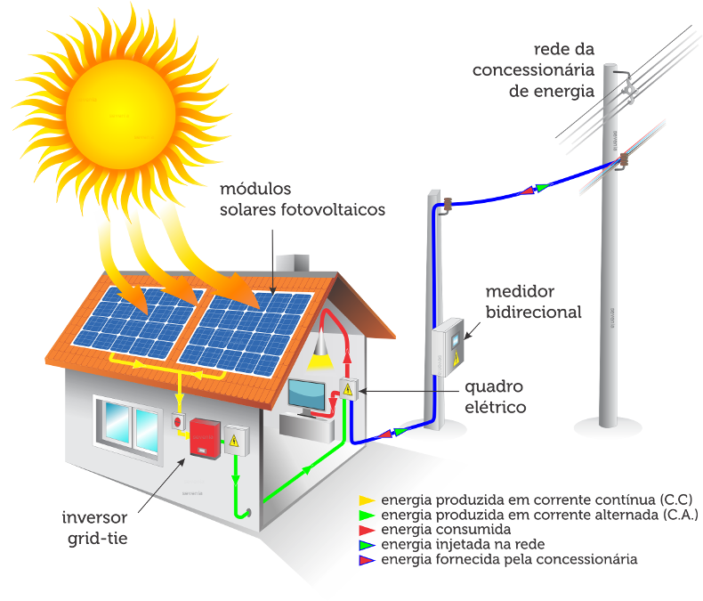
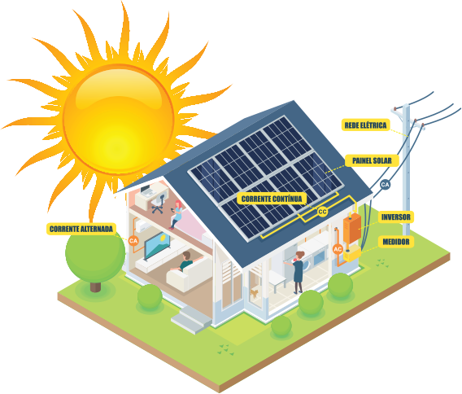
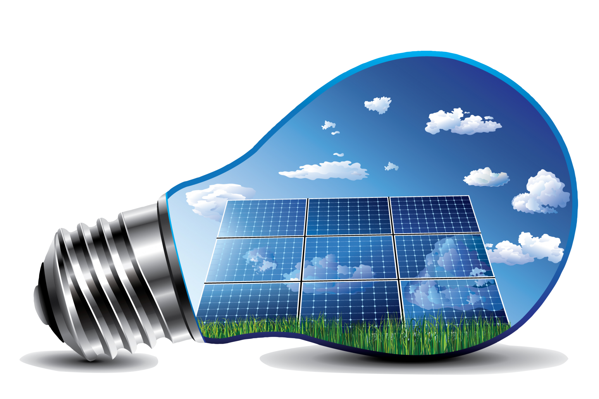
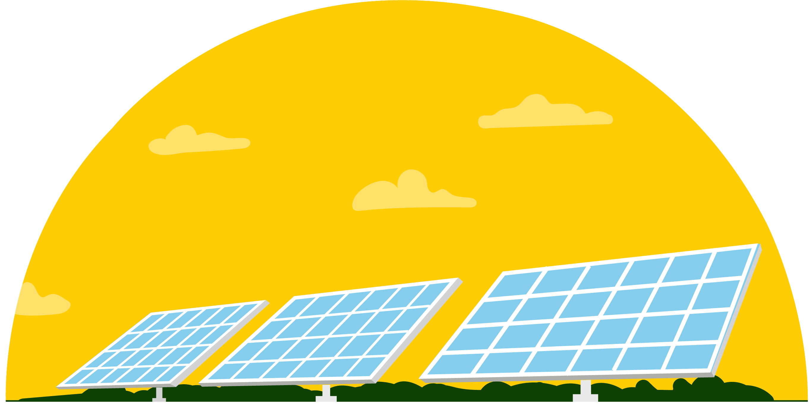

A energia solar é a energia proveniente da luz e do calor, sendo assim uma fonte alternativa e sustentável que pode ser utilizada para geração de eletricidade, pelos sistemas de energia solar fotovoltaica e hipotérmica, quanto aquecimento de água com aquecedores de energia solar térmica.
Ela também é uma fonte alternativa renovável e sustentável que provém da radiação eletromagnética, que vem diretamente do sol. Esta energia é utilizada por diferentes tecnologias, como aquecedores solares, painéis fotovoltaicos e usinas hipotérmicas.

A geração limpa de eletricidade pelos painéis de energia fotovoltaica, transformam a luz do sol diretamente em energia elétrica. Nesta energia quando as partículas de energia de luz do sol (fótons) incidem sobre os painéis solares, ocorre uma geração de corrente elétrica que geralmente é utilizada para alimentar residências, empresas e indústrias.
Já a energia Heliotérmica é proveniente dos raios solares indiretamente, porque o calor do sol é captado e armazenado, para depois ser transformado em energia solar mecânica e por fim, em eletricidade.
É produzida dentro dos sistemas compostos pelos painéis e inversores. Os fotovoltaicos captam a luz do sol, e transporta essa energia para o inversor solar, onde é transformada em energia elétrica.
As outras formas de energia solar, apesar de terem funcionamentos diferentes, tem o mesmo princípio. A partir da exposição aos raios solares, o sistema capta a energia necessária para funcionar e chegar ao efeito necessário. Nos painéis fotovoltaicos e usinas hipotérmicas a luz solar é convertida em energia elétrica e térmica. Já o aquecimento solar é convertido somente em energia térmica.
Esta energia não polui, é renovável, limpa e silenciosa, podendo ser usadas em áreas isoladas da rede elétrica, com pouca necessidade de manutenção, fácil de instalar e de se manter. Além disto esta energia é alternativa ao petróleo, é silenciosa, equipamentos fotovoltaicos podem ser reciclados em até 97%.
São vantagens da energia solar o baixo impacto ambiental. De fato, é uma energia que pode ser usada como substituta da energia elétrica convencional em regiões que ainda não possuem distribuição.
As placas solares também são uma opção para residências isoladas, fora da rede elétrica. Os sistemas off-grid (É um sistema fotovoltaico isolado e autônomo) utilizando o auxílio de baterias para armazenar a energia captada por placas, o que garante a alimentação mesmo em dias chuvosos ou durante a noite.
Algumas desvantagens desta energia são seu custo elevado, atualmente a produção de energia solar é muito cara. As placas residenciais é um grande exemplo disso, estando presentes na maior parte da população mais ricas. Também temos a dependência climática, pois interfere na produção de energia, nas usinas a produção se interrompe quando o sol fica encoberto por mais de 23 horas seguidas.
A baixa capacidade de armazenamento também é um grande problema, pois eles não acontecem em grandes quantidades em comparação a outras fontes de energias. O baixo rendimento é uma pequena desvantagem também, os painéis e usinas solares fotovoltaica possuem uma capacidade muito baixa. Já as usinas solares térmicas, o problema é um pouco menor.
O primeiro país subdesenvolvido a fabricar células fotovoltaicas foi o brasil. Por estar localizado próximo a linha do equador, que é uma região com grande resistência solar, o país conta com um cenário bem favorável para uma geração energética causada pela energia solar.
O brasil possui cerca de 30 mil geradores de energias fotovoltaicas, existem cerca de 500 mil coletores solares residenciais. Existe alguns projetos a respeito da geração da energia heliotérmica, principalmente na região do Nordeste. Em 2010 o ministério de minas e energia e o ministério da ciência, tecnologia e inovação iniciaram um acordo para a construção de plataforma de pesquisa em Petrolina (PE) com intuito de introduzir a energia solar no mercado.
A instalação de um sistema de energia solar no Brasil custa cerca de 3,5 mil euros por KWp (quilo-watt pico). Com isto o país não está entre os líderes de uso.